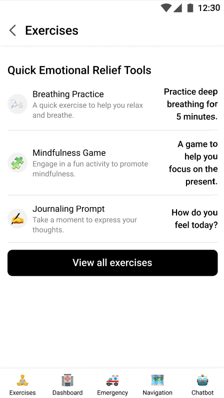
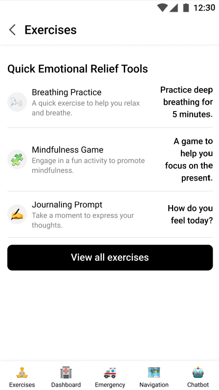

Research & Insights
Objective: Understand mental health challenges, barriers, and needs of Indian college students.
Desk Research Highlights
- 44.7% of students experience depression; 65.44% report significant stress.
- Only 10% seek professional help due to stigma and lack of awareness.
- India has 0.75 psychiatrists per 100,000 people vs. WHO’s recommended 3 per 100,000.
Key User Insights
- Preference for anonymous, digital solutions.
- Cultural relevance and emotional tone are critical for engagement.
- Students rely on informal support; professional help seen as last resort.
 
